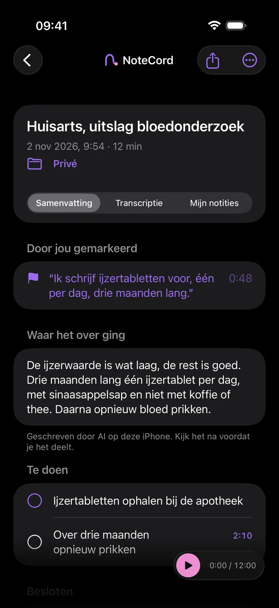

Vergadering opnemen met je iPhone
Open NoteCord, tik op opnemen en leg je iPhone op tafel. NoteCord neemt de vergadering op en schrijft hem uit op je iPhone, zodat je kunt luisteren in plaats van typen. Je hebt geen account nodig en opnames en tekst blijven op je iPhone.
Volg de release
Neem op en luister mee.
In een vergadering schrijf je mee of je doet mee. Als NoteCord opneemt, kijk je naar degene die praat. Achteraf lees je terug wat er gezegd is.
Zo neem je een vergadering op
Open NoteCord en tik op opnemen. Leg je iPhone op tafel, dichter bij wie praat dan bij jezelf. Vraag de mensen aan tafel eerst of opnemen goed is. Stop de opname als de vergadering klaar is. NoteCord schrijft hem uit op je iPhone, zonder account en zonder NoteCord-server ertussen.
Markeer wat telt terwijl je luistert.
Tik tijdens de vergadering op de vlag om een moment te markeren, of typ er een notitie bij. Later tik je erop en hoor je het, vanaf net ervoor.
Een samenvatting met vervolgstappen
Met Apple Intelligence maakt NoteCord op je iPhone een samenvatting met vervolgstappen. Zonder heb je nog wel de opname en de uitgeschreven tekst.
Vind de vergadering terug.
Zoek op een woord dat je nog weet, in al je opnames tegelijk. Sorteer ze in een map per project of klant.
Je opnames blijven op je iPhone.
NoteCord neemt op en schrijft uit op je iPhone. Er is geen NoteCord-server, dus wij kunnen je opnames niet zien. Geluid gaat nooit mee in een back-up. Deel je een opname, dan kies je zelf waar hij naartoe gaat.
Lees ook
Spraak naar tekst op je iPhone · Privacy-notitieapp voor iPhone
Wat mensen vragen
- Kan ik een vergadering opnemen met mijn iPhone?
- Ja. Open NoteCord, tik op opnemen en leg je iPhone op tafel. NoteCord neemt de vergadering op en schrijft hem uit op je iPhone.
- Heb ik een account nodig?
- Nee. Je kunt NoteCord zonder account gebruiken.
- Waar blijft de opname?
- Op je iPhone. NoteCord uploadt je geluid niet en er is geen NoteCord-server. Deel je een opname, dan kies je zelf waar hij naartoe gaat.
- Maakt NoteCord een samenvatting van de vergadering?
- Alleen met Apple Intelligence. Dan maakt NoteCord op je iPhone een samenvatting met actiepunten.
- Kan ik een belangrijk moment markeren?
- Ja. Tik tijdens de opname op de vlag. Later tik je erop en hoor je het, vanaf net ervoor.
- Moet ik zeggen dat ik opneem?
- Ja. Vraag de mensen in de vergadering vooraf om toestemming. De regels over opnemen verschillen per land, dus kijk wat voor jou geldt.
Neem je volgende vergadering op met NoteCord.